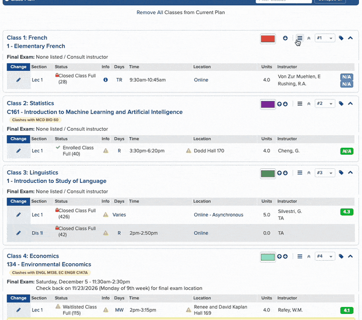

Your class plan, in the order you actually want it. 选课计划，想怎么排就怎么排。
Not made by, endorsed by, or affiliated with UCLA 非 UCLA 官方产品，与 UCLA 无关联

It works like a shopping cart. The shop only finds out at checkout. 它像个购物车。你加加减减，商家那边直到你提交订单才知道。
Dragging a class changes the order of the page sitting in your browser, and that is all it changes. Press Save and the extension turns your arrangement into a list of clicks on MyUCLA's own up and down arrows, then works through them for you, one position at a time. The bar at the bottom of the window shows how many classes you've moved and roughly how long that will take. 拖动一门课，改的只是你浏览器里这个页面的显示顺序，仅此而已。等你点了保存，它才把你排好的顺序翻译成一串针对 MyUCLA 自己那两个上下箭头的点击，然后一格一格替你点完。窗口底部那条会显示你动了几门课、大概要花多久。

It takes about two minutes, and it works in Chrome or in anything built on Chrome. 大概两分钟就好，Chrome 或者任何基于 Chrome 的浏览器都可以。
Download the latest version 下载最新版Unzip it somewhere you plan to keep, like Documents rather than Downloads. Chrome reads the extension out of this folder every time it starts up, so if the folder disappears the extension goes with it. 解压到一个你打算长期留着的地方，比如放在文稿里而不是下载里。Chrome 每次启动都要从这个文件夹里读，所以文件夹一旦没了，扩展也就跟着没了。
Open a new tab, type chrome://extensions into the address bar and
press Enter.
新开一个标签页，在地址栏里输入 chrome://extensions 然后回车。
Turn on Developer mode using the switch in the top right corner. 点右上角那个开关，打开开发者模式。

Three buttons will appear on the left, and the one you want is Load unpacked. 左上角会冒出三个按钮，你要点的是 Load unpacked（加载已解压的扩展程序）。

Go into the folder you just unzipped, select the folder called dist
inside it, and confirm. Make sure you're selecting that folder itself rather than
opening it and picking the files inside.
进到你刚解压出来的文件夹，选中里面那个叫 dist
的文件夹，然后确认。注意是选中这个文件夹本身，别进去选里面的文件。

If it worked, you should see it sitting there like this. 装成功的话，你应该会看到它像这样出现在列表里。

Now open your Class Planner at be.my.ucla.edu/ClassPlanner/ClassPlan.aspx, sign in the way you normally do, and scroll down to the blue Class Plan bar. Every class should have the new buttons on it. 然后打开你的 Class Planner be.my.ucla.edu/ClassPlanner/ClassPlan.aspx，照常登录，往下翻到蓝色的 Class Plan 那一栏，这时候每门课上应该都有新按钮了。
Two things worth knowing.有两件事想先跟你说一下。
Chrome will warn you about developer-mode extensions every time it starts up. That's its standard notice for anything that came from outside its store, and you can dismiss it. Chrome 每次启动都会跳出来提醒你“请停用开发者模式扩展程序”。这是它对商店以外来源的扩展都会给的例行提示，关掉就行。
Updating is something you do by hand. When a new version comes out, unzip it
over the same folder and hit the reload button on its card in
chrome://extensions. Unzip it somewhere else and Chrome treats it as
a separate extension, with its own empty set of notes and settings.
更新要你自己动手。出了新版本，解压覆盖到同一个文件夹，再去
chrome://extensions
点那张卡片上的刷新按钮。要是解压到了别的地方，Chrome 会把它当成另一个扩展，备注和设置都是空的。

Click the extension's icon in your toolbar and flip the switch at the top. The Class Planner goes back to exactly the way MyUCLA made it, straight away, without even a reload. 点一下工具栏上的扩展图标 ，把最上面那个开关关掉，Class Planner 立刻就变回 MyUCLA 原本的样子，连刷新都不用。
The other switch is optional, and worth explaining: MyUCLA only counts clicks as proof that you're still there, so if you spend fifteen minutes reading your plan without clicking anything it signs you out. Turn this on and scrolling counts too. 另一个开关是可选的，顺便解释一下它是干嘛的：MyUCLA 只把点击当成“人还在”，所以你要是盯着计划看了十五分钟却没点任何东西，它就把你登出了。打开这个开关之后，滚动页面也算数。
be.my.ucla.edu/ClassPlanner/ClassPlan.aspx.
它只在一个页面上运行，就是
be.my.ucla.edu/ClassPlanner/ClassPlan.aspx。